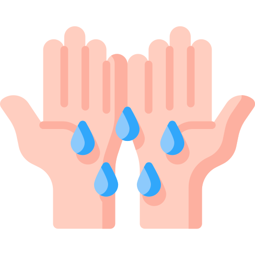
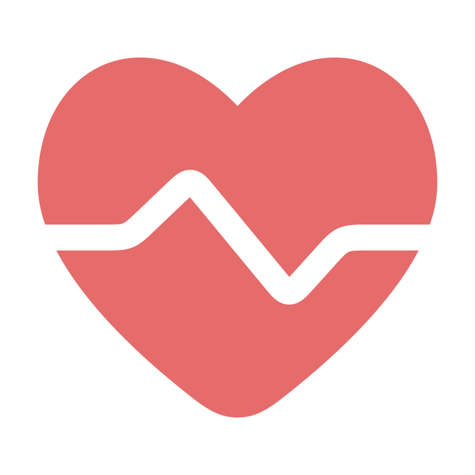
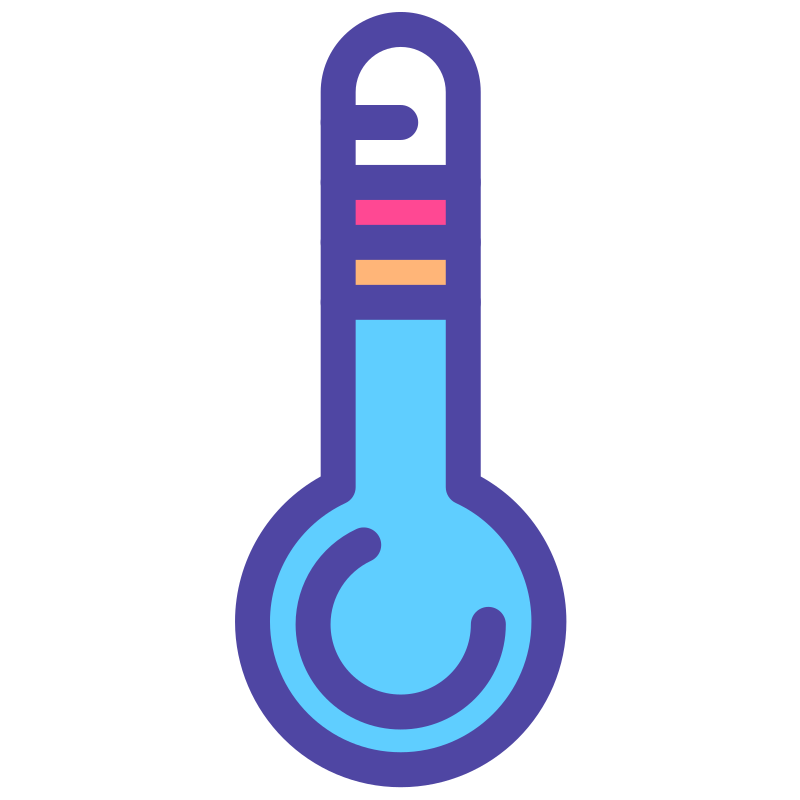

Stress plays a significant role in how students perform during exams. This dynamic visualization facilitates the exploration of how physiological stress markers—such as body movement, sweat response, heart rate, and skin temperature—relate to exam grades by examining individual features and their combinations. The dataset includes exam data from 10 students across three exams, with their stress markers tracked by a smartwatch-like device worn on their non-dominant hand throughout the exam period.
Euclidean Distance: 0.00
The accelerometer records acceleration (ACC) as a measurement of body movement, which can reflect cognitive engagement or attempts to manage stress. Higher movement values appear to correlate with better performance, potentially reflecting cognitive effort. However, constant fidgeting or sudden movement spikes can be signs of stress-related distraction, potentially leading to lower scores.

Electrodermal Activity (EDA) measures skin electrical conductance as a quantitative indicator of how much you sweat, serving as a direct measurement of emotional stress. Higher grades are associated with quick recovery from initial anxiety. Students who manage to calm down shortly after starting the exam generally perform better.

BPM: 75
Adjust the BPM slider to listen to the heart beat! (Scroll to stop)
Heart Rate (HR) indicates both physical stress and cognitive engagement. Higher heart rates, when consistent rather than erratic, are associated with improved concentration and better exam performance. Rapid and unpredictable fluctuations may indicate stress-related distraction and hinder cognitive performance.

Skin temperature (TEMP) changes can indicate stress-related physiological responses, such as blood vessel constriction. Consistent body temperature suggests better stress management and a higher potential for good performance.
Use the dropdown menu to select different markers and
compare their patterns across different students.
Each of the paired graphs will compare two students with their grades in Midterm 2.
Although exam durations were fixed,
the physiological data varied in length, often extending beyond the actual exam period.
To address this, we aligned the start time for all students within exams while incorporating
a 1-hour buffer period before and after the exam.
Since the data for different markers is recorded at different sample rates,
aggregation is done by exam time, with each point representing the average marker value per minute.
The blue line shows the marker’s value over time, while the red dashed line indicates the average
baseline for that marker. 🔍 Hover over the average line to see its exact value.
This visualization helps identify patterns in stress, focus, and performance trends across different exam sessions.
Use the dropdown menus to select a student and a physiological feature,
then observe how it changes over time during Midterm 1, Midterm 2, and the Final Exam.
The 1-hour buffer period before and after the exam also applies here.
The blue line shows the marker’s value over time, while the red dashed line indicates the average
baseline for that marker. 🔍 Hover over the average line to see its exact value.
While each factor provides valuable information, real-life stress responses are complex.
This section allows you to explore how combinations of physiological markers work together to predict a
student’s exam grade.
The predictions are generated by a linear regression model trained on an aggregated
dataset, where each data point represents the mean value of each physiological marker per student per exam
(30 student-exam combinations in total). The model uses four selected physiological markers (ACC, EDA, HR, TEMP) as features, with the
exam grade (percentage) as the label.
This section also allows you to explore how combinations of physiological markers work together
to predict a student’s exam grade using this model. Use the sliders below to adjust feature standard deviations
and explore how changes in stress markers affect grade predictions.
The Parallel Coordinates Plot below visualizes how various physiological features interact:
Vertical axes represent each marker (ACC, EDA, HR, TEMP) and the predicted grade.
Each line corresponds to a student’s data across the features. Color-coded lines indicate grade groups:
Dark Red: High grades (Q1), Light Red: Medium grades (Q2), Light Blue: Low grades (Q3),
Dark Blue: Very low grades (Q4), and Green: Model’s predicted grade line.
Follow a single line from left to right to see how a student's physiological responses influence
their predicted grade. Lines toward higher grade values indicate profiles associated with better
performance, while downward correspond to lower grades. Notice how higher ACC, HR, and TEMP values
generally align with higher predicted grades, while elevated EDA often correlates with lower scores.
⚠️ This prediction is based on physiological data collected from students at the University of Houston. Results may not generalize to all individuals or settings.
Source: The dataset used in this visualization is based on the work: Amin, M. R., Wickramasuriya, D., & Faghih, R. T. (2022).
A Wearable Exam Stress Dataset for Predicting Cognitive Performance in Real-World Settings (version 1.0.0).
PhysioNet. https://doi.org/10.13026/kvkb-aj90.
The abbreviation icons used on this website are from SVGREPO. The sound effects are from envato. We are very grateful for their free resources!
For more information about the dataset, please visit the PhysioNet website. For more information about the project, please read Project Writeup.